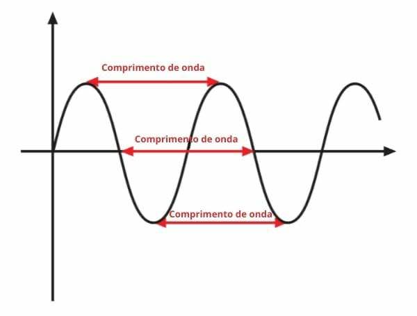
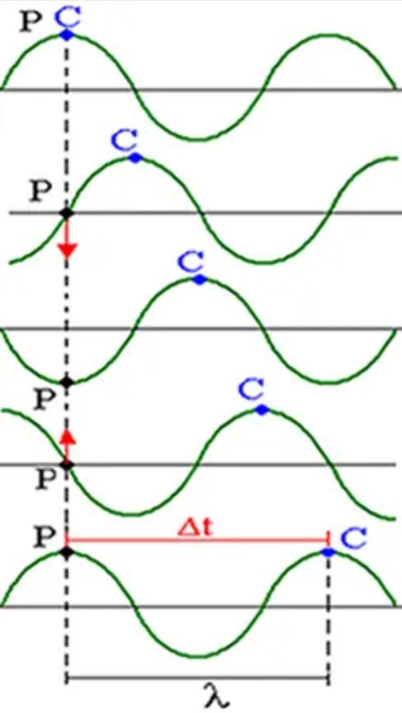
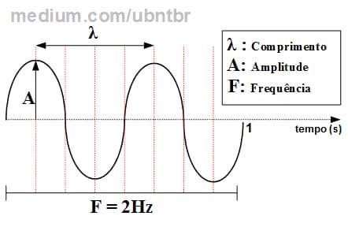
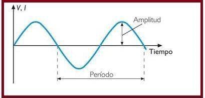
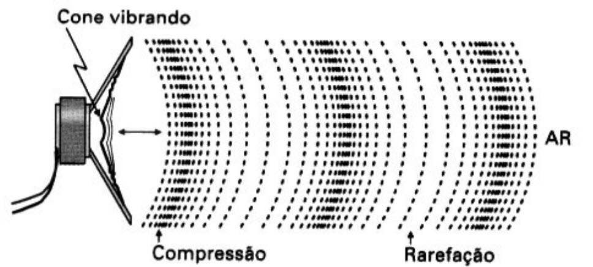
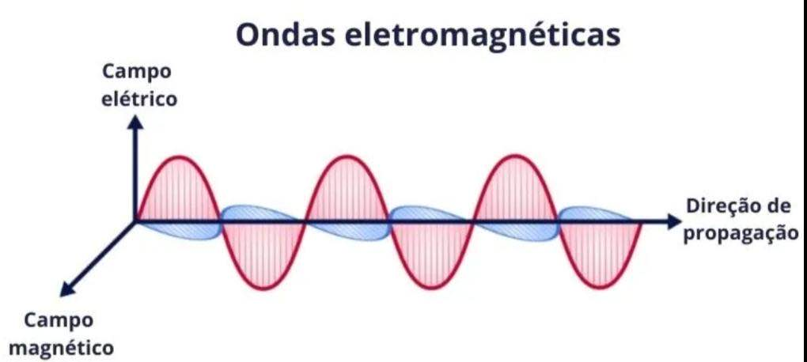

É uma perturbação oscilante de alguma grandeza física no espaço e periódica no tempo. A oscilação espacial se caracteriza por seu comprimento de onda, enquanto que o tempo decorrido em uma oscilação completa é denominado período da onda, e é o inverso da sua frequência. Ondulatória é a parte da Física que estuda as ondas. Qualquer onda pode ser estudada aqui, seja a onda do mar, ou ondas eletromagnéticas, como a luz. A definição de onda é qualquer perturbação (pulso) que se propaga em um meio. As ondas periódicas são caracterizadas por terem: amplitude, período, frequência e seu comprimento. Amplitudes: são as posições de oscilação máxima (crista) e mínima (vale). Período (T): é o tempo (t) necessário para a formação de um comprimento de onda, medido em segundos.
• Amplitude: corresponde à altura da onda, marcada pela distância entre o ponto de equilíbrio (repouso) da onda até a crista. Note que a “crista” indica o ponto máximo da onda, enquanto o “vale”, representa a ponto mínimo.

• Comprimento de onda: Representado pela letra grega lambda (λ), é a distância entre dois vales ou duas cristas sucessivas.

• Velocidade: representado pela letra (v), a velocidade de uma onda depende do meio em que ela está se propagando. Assim, quando uma onda muda seu meio de propagação, a sua velocidade pode mudar.

• Frequência: representada pela letra (f), no sistema internacional a frequência é medida em hertz (Hz) e corresponde ao número de oscilações da onda em determinado intervalo de tempo. A frequência de uma onda não depende do meio de propagação, apenas da frequência da fonte que produziu a onda.

• Período: representado pela letra (T), o período corresponde ao tempo de um comprimento de onda. No sistema internacional, a unidade de medida do período é segundos (s).

• Ondas Mecânicas: para que haja propagação, as ondas mecânicas necessitam de um meio material, por exemplo, as ondas sonoras e as ondas em uma corda.

• Ondas Eletromagnéticas: nesse caso, não é necessário que haja um meio material para que a onda se propague, por exemplo, as ondas de rádio e a luz.

• Ondas Unidimensionais: as ondas que se propagam em uma direção. Exemplo: ondas em uma corda.
• Ondas Bidimensionais: as ondas que se propagam em duas direções. Exemplo: ondas se propagando na superfície de um lago.
• Ondas Tridimensionais: as ondas que se propagam em todas as direções possíveis. Exemplo: ondas sonoras.
• Ondas Longitudinais: a vibração da fonte é paralela ao deslocamento da onda. Exemplo: ondas sonoras
• Ondas Transversais: a vibração é perpendicular à propagação da onda. Exemplo: onda em uma corda.
• Meios lineares: se diferentes ondas de qualquer ponto particular do meio em questão podem ser somadas.
• Meios limitados: se ele é finito em extensão, caso contrário são considerados ilimitados.
• Meios uniformes: se suas propriedades físicas não podem ser modificadas de diferentes pontos.
• Meios isotrópicos: se suas propriedades físicas são as mesmas em quaisquer direção.